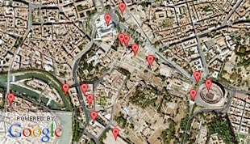

Roma Moleskine
"The ultimate traveler’s journal." City maps, removable sheets, and a 96-page tabbed archive.
Free Audio Tour of Rome
Download our free, award-winning audio tour of Rome’s top locations, from Vatican City to the Colosseum.
Video: Roma Italia

Interactive: Map of Rome
Popular Destinations
Voices Around the World
- “I couldn’t get enough of the gelato. The flavors and texture are way different than anything we have here.”
- “Absolutely divine. Don’t skip the Il Vittoriano. Its size alone is impressive. There’s a stunning view from the top.”
- “Rawk. What a place. I'll definitely be coming back next summer. Same hotel. Rome FTW.”
- “There are no wrong turns in Rome. Every path is a new adventure. Ignore the map once in a while.”
- “I’ve seen the Colosseum in photos, but it's SO much more stunning in person. Set aside an entire day to view it.”
- “L’Archetto di Cavour on Via Cavour is one of the best restaurants in downtown Rome. Anything on the menu.”
- “Visit the Trevi fountain at night. Most of the tourists clear out around 10pm. Beautiful at night.”